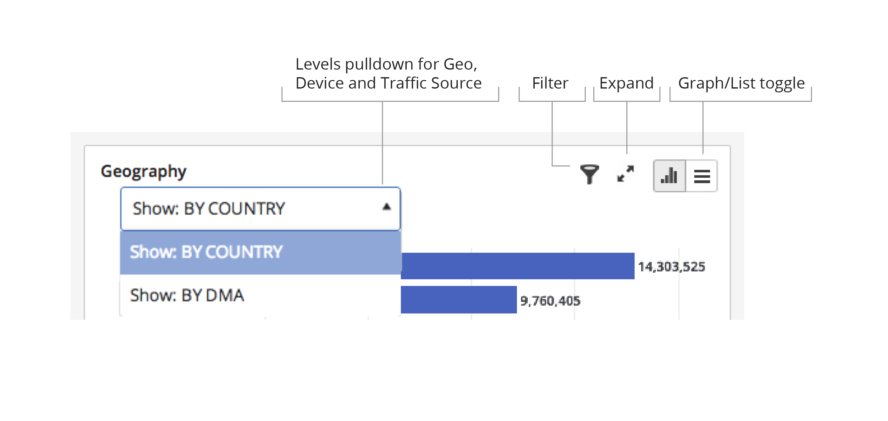
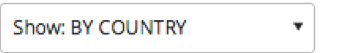
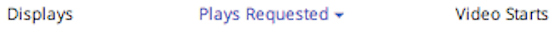

All of the dimension tables on the Business Intelligence and Video Details pages have similar controls for affecting the display.
In this section, the geography dimension is used to illustrate these common controls.

| Icon/Widget | Meaning/Use |
|---|---|
|  | For the Geography and Devices
dimensions, use the pulldown menu in the upper left-hand corner of the dimension box
to select the level of the data to display. |
|  | In list mode, sort the data in the column by clicking the column heading. |
| Switch between a text view and graphical view of the current dataset. | |
| Filter, or limit the amount of data displayed for the dimension. See discussion in Using Filters. | |
 |
This control displays the dimension data in an expanded table view. See discussion in Viewing Expanded Tables. |
| This exports reports as CSV files. Reports can contain up to 1,000 rows. |